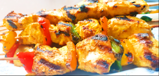

Ginger and Garlic Shish Tawook
a tender, juicy chicken skewers marinated in a vibrant Middle Eastern blend of yogurt, lemon, ginger, and
garlic, then grilled to smoky, aromatic perfection. {Generated by Ai for honesty}
Ingredients
- 300g chicken breast, cut into cubes
- 1/2 teaspoon minced garlic
- 1/2 teaspoon minced ginger
- 1 teaspoon chicken seasoning
- 1/4 teaspoon black pepper
- 1 tablespoon oil
- 2 tablespoons yogurt
- 1 teaspoon lemon juice
Instructions
- In a bowl, combine all ingredients and mix well
- Add the chicken and mix thoroughly
- Refrigerate for at least 30 minutes, preferably overnight
- The next day, you can add vegetables (red pepper, green pepper, onion) cut into squares
- Alternatively, you can skip the vegetables
- Thread onto wooden skewers that have been soaked in water for 30 minutes
- After threading the chicken onto skewers, place some oil in a grill pan over medium-high heat
- Arrange the skewers in the grill pan
- When the chicken pieces brown, turn to the other side until all sides are golden brown
- Remove from heat and serve with cut vegetables or white rice
